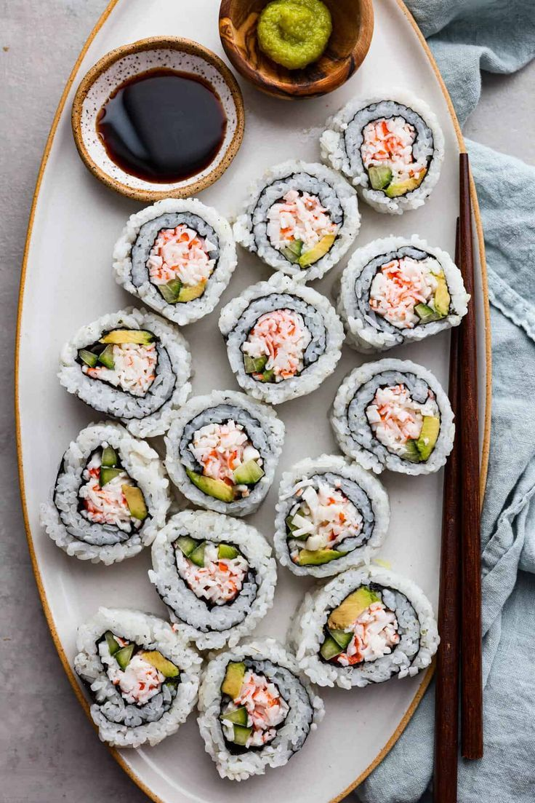
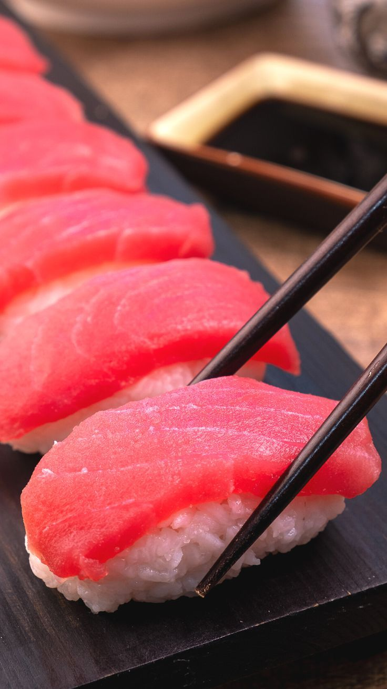
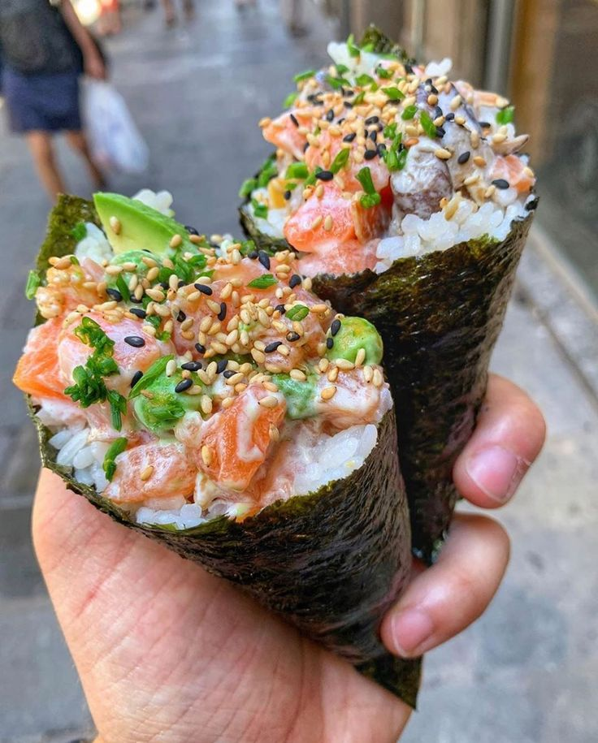
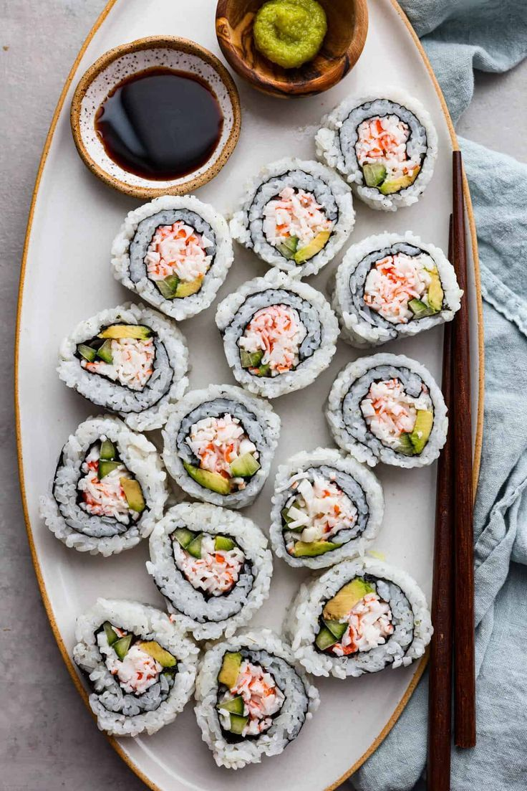
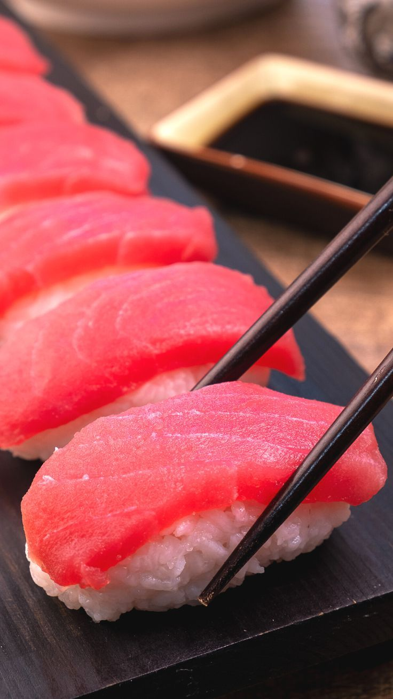
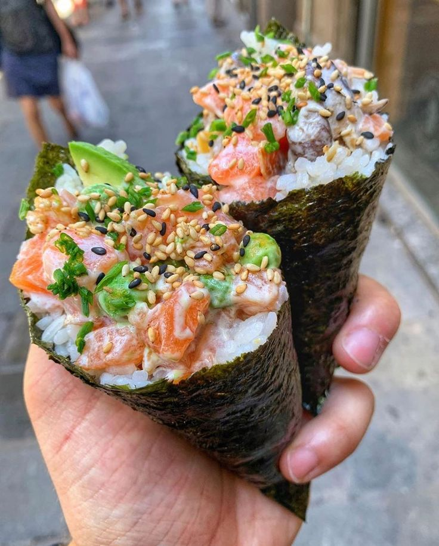

TOP 5 des bests sushis !
1
California Roll
2
Sushi Classique
3
Temaki
4
Salmon Roll

5
Fried Roll

Pour les personnes comme nous qui aiment les jeux de mots autant que les sushis, préparez-vous à vous régaler avec des blagues aussi fraîches que vos sashimis préférés ! Que vous soyez une étudiante passionnée par la cuisine japonaise ou une fan de sushi à la recherche de nouvelles idées, vous trouverez ici tout ce qu'il vous faut pour satisfaire vos envies gourmandes et amusantes. Ne vous faites pas de sushis ! On va tout vous apprendre.
California Roll
Sushi Classique
Temaki
Salmon Roll
Fried Roll